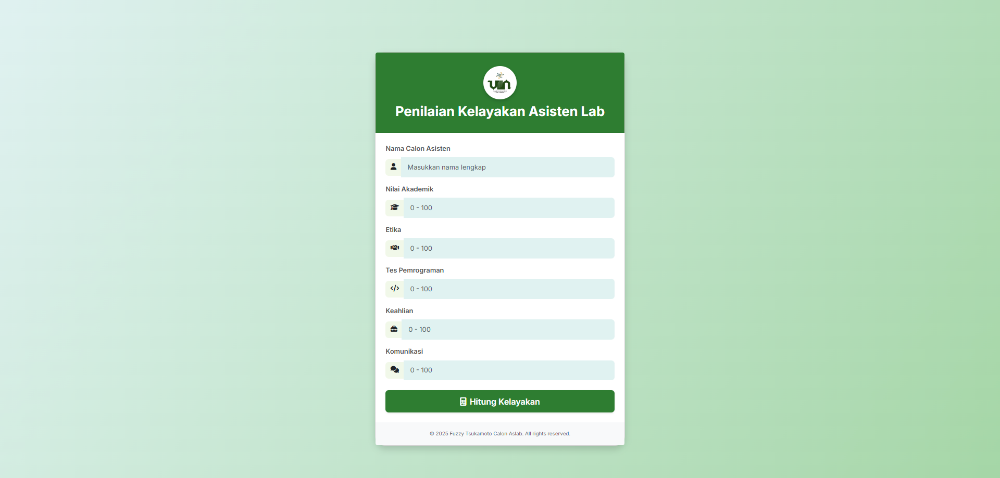

System
Sistem Fuzzy Penilaian Calon Aslab
Sistem cerdas berbasis logika fuzzy untuk penilaian kandidat dengan akurasi 92% menggunakan algoritma Fuzzy Tsukamoto. Sistem ini mengelola data kandidat, menghitung nilai fuzzy, dan memberikan rekomendasi calon asisten laboratorium.